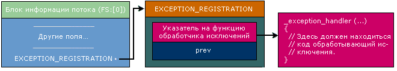
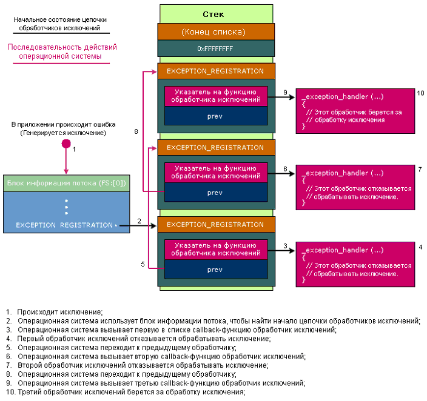
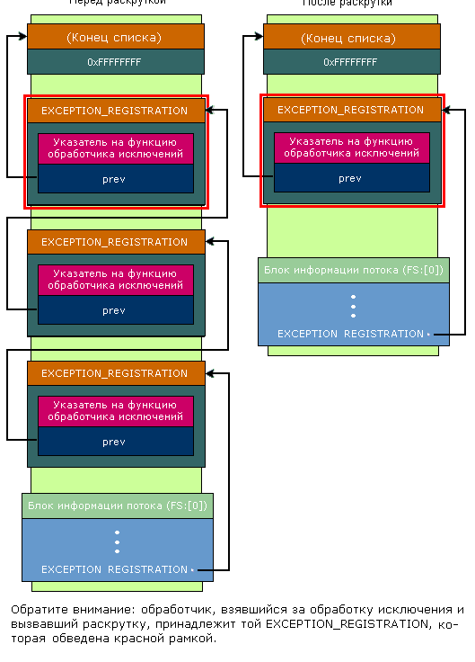
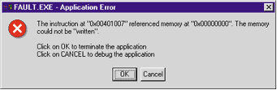

В своей основе, структурная обработка исключений - это сервис, предоставляемый системой. Вся документация по SEH, которую вы, вероятно, найдете, описывает одну лишь компиляторно-зависимую оболочку, созданную RTL вокруг реализации SEH операционной системы. Я здесь рассмотрю самые фундаментальные концепции SEH.
Эта статья предполагает, что вы уже знакомы с C++ и Win32
Из всех механизмов, предоставляемых операционными системами Win32®, возможно наиболее широко используемым, но не документированным является механизм структурной обработки исключений (он же Structured Exception Handling, или просто - SEH). Когда вы думаете о Win32 SEH, то, вероятно, вспоминаете термины подобные _try, _finally, и _except. Вы можете найти хорошее описания SEH в почти любой компетентной книге по Win32 (даже посредственной). Даже Win32 SDK имеет довольно законченный краткий обзор использования SEH с использованием _try, _finally, и _except.
Почему я, принимая во внимание всю эту документацию, утверждаю, что механизм SEH является не документированным? Утверждение основывается на том, что Win32 SEH - это механизм, предоставляемый операционной системой. Вся документация о SEH, которую вы, вероятно, найдете, описывает только компиляторно-зависимую обертку RTL (runtime-library) над механизмом SEH, реализованным на уровне операционной системы. В ключевых словах _try, _finally, или _except, нет ничего магического. Группы разработчиков из Microsoft, занимающиеся разработкой операционных систем и компиляторов, определили эти ключевые слова, и то, что они делают. Другие поставщики C++-компиляторов просто поддержали эту семантику. Механизм SEH уровня компилятора скрывает недружелюбность базового SEH уровня операционной системы, что позволило не обнародовать детали функционирования последнего.
Я получил много писем от людей, которым нужно было реализовать SEH уровня компилятора, и которые не смогли найти нужной информации в документации по подсистемам ОС. Было бы разумно с моей стороны просто указать им на исходники RTL Visual C++ или Borland C++, и забыть об этом. Увы, по какой то неизвестной причине, реализация SEH на уровне компилятора, похоже, является большой тайной. Ни Microsoft, ни Borland не предоставляют исходных кодов самого внутреннего уровня их поддержки SEH.
В этой статье я буду рассматривать SEH вплоть до самых фундаментальных концепций. При этом я отделю реализованное операционной системой от того, что обеспечивают компиляторы через генерацию объектного кода, и поддержку в RTL. Когда я буду рассматривать код ключевых функций ОС, я буду иметь в виду Intel-версию Windows NT 4.0. Однако, большая часть из описанного здесь, применима и к другим процессорным платформам.
Я собираюсь избегать проблем родного C++ механизма обработки исключений, в котором используется catch() вместо _except. В глубине, родной C++ механизм реализован подобно описанному здесь. Однако он имеет некоторые дополнительные сложности, которые усложнили бы восприятие тех концепций, которые я хочу здесь охватить.
При изучении невразумительных .h и .inc файлов для составления из отдельных частей того, что называется Win32 SEH, одним из лучших источников информации, как оказалось, являются заголовочные файлы IBM OS/2 (особенно BSEXCPT.H). Если вы знаете историю Microsoft, это не удивит вас. Механизмы SEH, описанные здесь были определены раньше, когда Microsoft еще работал над OS/2. По этой причине, вы увидите, что реализация SEH под Win32 и OS/2, очень похожа.
Так как подробности SEH, изложенные все сразу, могут испугать вас, я начну с простых вещей, и буду постепенно переходить к более сложным. Если вы никогда не работали c SEH, значит у вас нет предубеждений. Если раньше вы использовали SEH, постарайтесь забыть о таких словах как __try, GetExceptionCode и EXCEPTION_EXECUTE_HANDLER. Притворитесь, что это новая для вас тема. Глубоко вздохните. Готовы? Хорошо.
Представьте, что я сказал вам, что когда выполняющийся поток совершает ошибку, ОС дает вам возможность узнать об этом. Точнее, когда поток совершает ошибку, ОС вызывает определенную пользователем callback-функцию. Функциональность этой callback-функции в значительной степени не регламентирована, т.е. в процессе своей работы она может делать все, что вам угодно. Например, она может устранить причину ошибки, или же просто проиграть какой-нибудь wav-файл. Независимо оттого, что эта callback-функция делает, она должна возвратить значение, которое скажет системе, что делать дальше.
Учитывая, что ваша функция будет вызвана системой, после того как произойдет ошибка то, что она должна знать? Другими словами, какую информацию вам хотелось бы иметь об исключении? В действительности же, ваше мнение здесь не имеет значения, т.к. в Win32 все решено за вас. Вызываемая, при возникновении исключения, callback-функция выглядит примерно так:
EXCEPTION_DISPOSITION
__cdecl _except_handler(
struct _EXCEPTION_RECORD *ExceptionRecord,
void * EstablisherFrame,
struct _CONTEXT *ContextRecord,
void * DispatcherContext
);
Этот прототип, взятый из стандартного заголовочного файла Win32: EXCPT.H, сначала выглядит немного пугающе. Но, если вы будете изучать его не спеша, то все окажется не так уж сложно. Пока можете не обращать внимания на тип возвращаемого значения (EXCEPTION_DISPOSITION). Главное, что функция _except_handler имеет четыре параметра.
Первый параметр callback-функции _except_handler - указатель на структуру EXCEPTION_RECORD. Эта структура определена в WINNT.H, следующим образом:
typedef struct _EXCEPTION_RECORD {
DWORD ExceptionCode;
DWORD ExceptionFlags;
struct _EXCEPTION_RECORD *ExceptionRecord;
PVOID ExceptionAddress;
DWORD NumberParameters;
DWORD ExceptionInformation[EXCEPTION_MAXIMUM_PARAMETERS];
} EXCEPTION_RECORD;
Поле ExceptionCode - содержит код, который в операционной системе закреплен за исключением. Вы можете посмотреть список различных кодов исключения в заголовочном файле WINNT.H. Для этого надо искать директивы #define, которые начинаются с "STATUS_". Например, код, всем известного, STATUS_ACCESS_VIOLATION - 0xC0000005. Наиболее полный набор кодов исключений можно найти в заголовочном файле NTSTATUS.H из Windows NT DDK. Четвертый элемент в структуре EXCEPTION_RECORD: ExceptionAddress - содержит адрес, где произошло исключение. На оставшиеся поля EXCEPTION_RECORD можно пока не обращать внимание.
Второй параметр функции _except_handler - содержит указатель на установочную структуру фрейма (establisher frame) принадлежащую этой callback-функции, т.е. на ту структуру, адрес которой заносят в FS:[0] при установке per-thread обработчика. Это жизненно важный параметр, но пока вы можете его игнорировать.
Третий параметр callback-функции _except_handler - содержит указатель на структуру CONTEXT. Эта структура содержит значения регистров в вызвавшем исключение потоке на момент возникновения исключения. На рис.1 показано, как определена эта структура в WinNT.H.
typedef struct _CONTEXT
{
DWORD ContextFlags;
DWORD Dr0;
DWORD Dr1;
DWORD Dr2;
DWORD Dr3;
DWORD Dr6;
DWORD Dr7;
FLOATING_SAVE_AREA FloatSave;
DWORD SegGs;
DWORD SegFs;
DWORD SegEs;
DWORD SegDs;
DWORD Edi;
DWORD Esi;
DWORD Ebx;
DWORD Edx;
DWORD Ecx;
DWORD Eax;
DWORD Ebp;
DWORD Eip;
DWORD SegCs;
DWORD EFlags;
DWORD Esp;
DWORD SegSs;
} CONTEXT;
Кстати, эта же структура используется в API-функциях GetThreadContext и SetThreadContext.
Четвертый, заключительный, параметр callback-функции _except_handler называется DispatcherContext. Его также можно пока игнорировать.
Теперь кратко резюмируем вышесказанное: мы имеем callback-функцию, которая вызывается при возникновении исключений. При вызове функции ей передаются четыре параметра, три из которых - содержат указатели на структуры. Некоторые поля в этих структурах важны, другие не очень. Ключевой момент: callback-функция _except_handler получает обширную информацию, такую как, тип произошедшего исключения и где оно произошло. Используя эту информацию, она должна решить, что ей нужно делать.
Хотя меня постоянно подмывает, быстренько набросать вместе с вами типовую программку, которая показала бы callback-функцию _except_handler в действии, но для этого нам все еще кое-чего не хватает. В частности, откуда операционная система узнает, какую функцию вызвать при возникновении исключения? Ответ - есть еще одна структура, названная: EXCEPTION_REGISTRATION. Вы ещё не раз встретите её в этой статье, так что не проходите мимо её описания. Единственное место, где я смог найти формальное определение EXCEPTION_REGISTRATION, файл EXSUP.INC, находящийся в исходниках RTL из Visual C++:
_EXCEPTION_REGISTRATION struc
prev dd ?
handler dd ?
_EXCEPTION_REGISTRATION ends
Вы также можете увидеть, что в определении структуры NT_TIB, которое находится в заголовочном файле WINNT.H, на эту структуру ссылаются как на _EXCEPTION_REGISTRATION_RECORD. Увы, _EXCEPTION_REGISTRATION_RECORD нигде не определена, поэтому я был вынужден использовать определение этой структуры на ассемблере находящееся в файле EXSUP.INC. Это только один пример того, что я подразумевал ранее, когда я говорил, что SEH является не документированным механизмом.
В любом случае, давайте вернемся к рассматриваемому вопросу. Откуда операционная система узнает, какую функцию она должна вызвать при возникновении исключения? Структура EXCEPTION_REGISTRATION состоит из двух полей, первое, из которых вы можете пока игнорировать. Второе поле, handler, содержит указатель на callback-функцию обработчика исключений. Имеющаяся у нас теперь информация позволяет подойти немного ближе к ответу на наш вопрос, но теперь вопрос будем ставить так: каким образом операционная система находит нужный экземпляр структуры EXCEPTION_REGISTRATION?
Чтобы ответить на этот вопрос, полезно будет вспомнить, что SEH работает на поточно-зависимой основе. То есть каждый поток имеет свою собственную callback-функцию обработчика исключений (exception handler). В мае 1996 г. в своей колонке, я описал ключевую структуру данных Win32: блок информации потока (он же TEB или TIB). Некоторые поля этой структуры данных одинаковы в Windows NT, Windows 95, Win32s и OS/2. Первый DWORD в TIB'е - указатель на структуру EXCEPTION_REGISTRATION закрепленную за текущим потоком. На Intel Win32 платформе, регистр FS всегда указывает на текущий TIB. Таким образом, по адресу FS:[0] вы можете найти указатель на структуру EXCEPTION_REGISTRATION.
|  |
| Рисунок 2. Схема вызова функции обработчика исключений операционной системой. |
Наконец, сложив эти кирпичики вместе, я написал маленькую программку для демонстрации этого очень простого описания SEH на уровне ОС. На рис. 3 показан файл MYSEH.CPP, который имеет только две функции. Функция main использует три инлайновых ассемблерных блока. Первый блок создает в стеке структуру EXCEPTION_REGISTRATION используя две операции PUSH ("PUSH handler" и "PUSH FS:[0]"). PUSH FS:[0] сохраняет предыдущее значение FS:[0] как часть этой структуры, но в настоящее время это для нас не важно. Важно, что в стеке находится экземпляр 8-байтовой структуры EXCEPTION_REGISTRATION. Следующая операция (MOV FS:[0],ESP) делает так, чтобы первый DWORD в TIB’е указывал на новую структуру EXCEPTION_REGISTRATION.
//================================================== // MYSEH - Мэт Питрек 1997 // Microsoft Systems Journal, Январь 1997 // FILE: MYSEH.CPP // To compile: CL MYSEH.CPP //================================================== #define WIN32_LEAN_AND_MEAN #include#include DWORD scratch; EXCEPTION_DISPOSITION __cdecl _except_handler( struct _EXCEPTION_RECORD *ExceptionRecord, void * EstablisherFrame, struct _CONTEXT *ContextRecord, void * DispatcherContext ) { unsigned i; // Сообщаем, что сработал наш обработчик исключений. printf( "Hello from an exception handler!\n" ); // Изменяем значение регистра EAX в context record таким образом, чтобы оно // указывало на какое-либо, доступное для записи место в памяти. ContextRecord->Eax = (DWORD)&scratch; // Просим ОС еще раз попытаться выполнить вызвавшую исключение инструкцию. return ExceptionContinueExecution; } int main() { DWORD handler = (DWORD)_except_handler; __asm { // Создаем структуру EXCEPTION_REGISTRATION: push handler // Адрес функции обработчика исключений. push FS:[0] // Адрес предыдущего EXECEPTION_REGISTRATION. mov FS:[0],ESP // Добавляем в связанный список EXECEPTION_REGISTRATION. } __asm { mov eax,0 // Обнуляем значение регистра EAX. mov [eax], 1 // Чтобы преднамеренно вызвать исключение, делаем запись // по нулевому адресу. } printf( " After writing!\n" ); __asm { // Удаляем из связанного списка EXECEPTION_REGISTRATION. mov eax,[ESP] // Получаем указатель на предыдущий // EXECEPTION_REGISTRATION. mov FS:[0], EAX // Устанавливаем в начале списка предыдущий // EXECEPTION_REGISTRATION. add esp, 8 // Удаляем из стека структуру EXECEPTION_REGISTRATION. } return 0; }
Если вас задаетесь вопросом: почему я создал экземпляр структуры EXCEPTION_REGISTRATION в стеке, вместо того, чтобы использовать для нее глобальную переменную, то на это есть серьезное основание. Когда вы используете синтаксис компилятора _try/_except, компилятор также создает в стеке экземпляр структуры EXCEPTION_REGISTRATION. Я просто показываю вам упрощенную версию того, что сделал бы компилятор, если бы вы использовали _try/_except. (Примечание переводчика: Edmond/HI-TECH по поводу возможности поместить экземпляр структуры EXCEPTION_REGISTRATION не в стек, а в глобальную переменную сказал следующее: Этого делать нельзя!!! Код ядра, который управляет SEH, проверяет, где находится экземпляр структуры EXCEPTION_REGISTRATION. Если эта структура находится не в стеке - он вызывает аварийное исключение.).
Вернемся к функции main, следующий ассемблерный блок преднамеренно вызывает ошибку, обнулив регистр EAX (MOV EAX, 0), и затем, использует значение этого регистра как адрес памяти, по которому следующая операция пытается произвести запись (MOV DWORD PTR [EAX], 1). Заключительный ассемблерный блок удаляет этот простой обработчик исключений: сначала он восстанавливает предыдущее содержимое FS:[0], и после этого удаляет с вершины стека запись EXCEPTION_REGISTRATION (ADD ESP, 8).
Теперь, представьте, что вы выполняете MYSEH.EXE, и способны видеть, что происходит. Когда выполняется инструкция "MOV DWORD PTR [EAX], 1", происходит исключение, вызванное нарушением прав доступа. Система смотрит на FS:[0] в TIB'е, и находит указатель на экземпляр структуры EXCEPTION_REGISTRATION. В этой структуре находится указатель на функцию обработчика исключений из MYSEH.CPP. После этого система помещает в стек четыре обязательных параметра (которые я описал ранее), и вызывает функцию _except_handler.
Код внутри _except_handler сначала, с помощью printf, выводит на экран надпись: “ Yo! I made it here!”. Затем _except_handler устраняет причину возникновения ошибки. Проблема, вызвавшая исключение заключается в том, что регистр EAX указывает на адрес памяти, по которому не может быть произведена запись (в данном случае, нулевой адрес). Исправление состоит в изменении значения регистра EAX в структуре CONTEXT, так чтобы он указывал на такое место в памяти, в которое разрешена запись. В этой простой программе переменная типа DWORD (scratch) создана только для этой цели. Последнее действие функции _except_handler - вернуть значение ExceptionContinueExecution, которое определено в стандартном файле EXCPT.H.
Когда ОС видит, что было возвращено значение ExceptionContinueExecution, она “понимает”, что вы исправили проблему, и команда, вызвавшая исключение, должна быть выполнена снова. Так как моя функция _except_handler скорректировала регистр EAX, чтобы он указывал на подходящую область памяти, со второй попытки инструкция "MOV DWORD PTR [EAX], 1" выполняется нормально, и функции main продолжает работать дальше. Видите, всё это было не слишком сложно, не так ли?
Рассмотрев этот простой сценарий, давайте вернемся назад, и заполним некоторые оставшиеся пробелы. Пока обработчик исключений является общим для всего кода программы, решение нельзя назвать - совершенным. В приложении любого размера, было бы чрезвычайно неразумно делать только одну функцию для обработки всех тех исключений, которые могут произойти в его коде. Гораздо более разумный сценарий заключается в том, что нужно сделать группу обработчиков исключений, каждый из которых будет охранять определенный участок кода. Вы можете не знать этого, но операционная система обеспечивает именно такую функциональность.
Помните структуру EXCEPTION_REGISTRATION, которую система использует, чтобы найти callback-функцию обработчика исключений? Первый член этой структуры, который я ранее игнорировал, называется prev. На самом деле это указатель на другую структуру EXCEPTION_REGISTRATION. Эта вторая структура EXCEPTION_REGISTRATION может иметь совершенно другую функцию обработчика. К тому же, его поле prev может указывать на третью структуру EXCEPTION_REGISTRATION, и так далее. Другими словами, мы имеем просто связанный список структур EXCEPTION_REGISTRATION. На начало этого списка всегда указывает первый DWORD в TIB (FS:[0] в машинах на основе Intel).
Что ОС делает с этим связанным списком структур EXCEPTION_REGISTRATION? Когда происходит исключение, система обходит этот список в поисках такой структуры EXCEPTION_REGISTRATION, обработчик исключений которой согласится обработать исключение. В случае MYSEH.CPP, обработчик согласился обработать исключение, вернув значение ExceptionContinueExecution. Обработчик исключений может также отказаться обрабатывать исключение. В этом случае ОС переходит к следующей структуре EXCEPTION_REGISTRATION, и просит её обработчик обработать исключение. Рис. 4 иллюстрирует данный процесс. Как только система находит обработчик исключений, который соглашается обработать исключение, она прекращает обход связанного списка структур EXCEPTION_REGISTRATION.
Чтобы увидеть пример обработчика исключений, который отказывается от обработки исключения, посмотрите MYSEH2.CPP на рис. 5. Чтобы не усложнять код, я немного схитрил, и использовал небольшой обработчик исключений уровня компилятора. Функция main всего лишь устанавливает блок _try/_except. В блоке _try - производится вызов функции HomeGrownFrame. Код этой функции очень похож на код предыдущей программы MYSEH. Она помещает EXCEPTION_REGISTRATION в стек, и делает так, чтобы FS:[0] указывал на вершину этой структуры. После установки нового обработчика, функция преднамеренно вызывает ошибку, производя запись в память по нулевому адресу:
*(PDWORD)0 = 0;
Функция обработчика исключений, снова названная _except_handler, сильно отличается от своей ранней версии. Код сначала распечатывает код и флажки исключения, взятые из структуры ExceptionRecord, указатель на которую функция получает в качестве параметра. Причина, по которой распечатываются флажки исключения, станет, ясна вам позже. Так как эта функция _except_handler не намерена обрабатывать исключение, она возвращает значение ExceptionContinueSearch. Это заставляет операционную систему продолжить поиск другого обработчика исключений в следующем EXCEPTION_REGISTRATION из связанного списка. А теперь, можете мне поверить, следующий установленный обработчик исключений - это обработчик из блока _try/_except в функции main. Блок _except просто распечатывает текст: "Caught the exception in main()".В данном случае обработка исключения также проста, как и его игнорирование.
|  |
| Рисунок 4. Поиск нужного обработчика исключений. (Примечание переводчика: в оригинале этого рисунка есть ошибка. Там все обработчики отказываются от обработки исключения.) |
//================================================== // MYSEH2 - Мэт Питрек 1997 // Microsoft Systems Journal, Январь 1997 // FILE: MYSEH2.CPP // To compile: CL MYSEH2.CPP //================================================== #define WIN32_LEAN_AND_MEAN #include#include EXCEPTION_DISPOSITION __cdecl _except_handler( struct _EXCEPTION_RECORD *ExceptionRecord, void * EstablisherFrame, struct _CONTEXT *ContextRecord, void * DispatcherContext ) { printf( " Home Grown handler: Exception Code: %08X Exception Flags %X ", ExceptionRecord->ExceptionCode, ExceptionRecord->ExceptionFlags ); if ( ExceptionRecord->ExceptionFlags & 1 ) printf( " EH_NONCONTINUABLE" ); if ( ExceptionRecord->ExceptionFlags & 2 ) printf( " EH_UNWINDING" ); if ( ExceptionRecord->ExceptionFlags & 4 ) printf( " EH_EXIT_UNWIND" ); if ( ExceptionRecord->ExceptionFlags & 8 ) printf( " EH_STACK_INVALID" ); if ( ExceptionRecord->ExceptionFlags & 0x10 ) printf( " EH_NESTED_CALL" ); printf( "\n" ); // Отказываемся... Мы не хотим обрабатывать его... Позволяем кому-нибудь // другому сделать это. return ExceptionContinueSearch; } void HomeGrownFrame( void ) { DWORD handler = (DWORD)_except_handler; __asm { // Создаем структуру EXCEPTION_REGISTRATION: push handler // Адрес функции нашего обработчика исключений. push FS:[0] // Адрес предыдущего EXECEPTION_REGISTRATION. mov FS:[0],ESP // Добавляем в связанный список EXECEPTION_REGISTRATION. } *(PDWORD)0 = 0; // Преднамеренно вызываем исключение. printf( " I should never get here!\n" ); __asm { // Удаляем EXECEPTION_REGISTRATION из связанного списка. mov eax,[ESP] // Получаем указатель на предыдущий // EXECEPTION_REGISTRATION. mov FS:[0], EAX // Устанавливаем в начале списка предыдущий // EXECEPTION_REGISTRATION. add esp, 8 // Удаляем из стека структуру EXECEPTION_REGISTRATION. } } int main() { _try { HomeGrownFrame(); } _except( EXCEPTION_EXECUTE_HANDLER ) { printf( " Caught the exception in main()\n" ); } return 0; }
Ключевая мысль: повышение контроля над выполнением программы. Когда обработчик отказывается обрабатывать исключение, он фактически отказывается решать, откуда, в конечном счете, будет продолжено выполнение программы. Тот обработчик, который соглашается обработать исключение, и решает, откуда продолжится выполнение программы после того, как будет завершена обработка исключения. Это очень важно, но не очевидно.
При использовании SEH, функция все равно может завершиться аварийно в том случае, если ее exception handler не обработает возникшее исключение. Например, в MYSEH2 минимальный обработчик в функции HomeGrownFrame не обрабатывает исключение. Так как кто-то дальше по цепочке обрабатывает исключение (функция main), printf после ошибочной инструкции никогда не выполняется. В некоторой степени, использование SEH напоминает использование функций setjmp и longjmp из RTL.
Если вы выполните MYSEH2, то увидите нечто удивительное в том, что она выводит на экран. Похоже, что функция _except_handler вызывается дважды. Учитывая, что вы сейчас знаете, причина ее первого вызова должна быть понятна. Но откуда взялся второй вызов?
Home Grown handler: Exception Code: C0000005 Exception Flags 0
Home Grown handler: Exception Code: C0000027 Exception Flags 2
EH_UNWINDING
Caught the Exception in main()
Есть очевидное различие: сравните две строки, которые начинаются с "Home Grown Handler:". В частности флажки исключения равны 0 в первый раз, и 2 во второй. Это подводит меня к понятию раскрутки (unwinding). Зайдём немного вперёд: если callback-функция обработчика отказывается обрабатывать исключение, она вызывается во второй раз. Однако это не происходит сразу же. Всё немного сложнее. Мне нужно будет уточнить сценарий исключения в последний раз.
Когда происходит исключение, система обходит список структур EXCEPTION_REGISTRATION, до тех пор пока не находит обработчик исключения. Как только он найдётся, ОС снова обходит список, до узла, который будет обрабатывать исключение. (Примечание переводчика: это утверждение может ввести вас в заблуждение! Лично у меня, после его прочтения, сложилось впечатление, что процессом раскрутки полностью управляет ОС. На самом деле, это не так. Процесс раскрутки инициируется обработчиком, взявшимся за обработку исключения. Более того, для проведения раскрутки, обработчику могут вообще не понадобиться услуги ОС, т.к. у него может иметься собственный код для ее реализации.) Во время этого второго прохода ОС вызывает каждый обработчик ещё раз, но на этот раз значение флагов исключения равно 2, что соответствует EH_UNWINDING (определение EH_UNWINDING есть в файле EXCEPT.INC, который находится в исходниках RTL Visual C++, но в Win32 SDK его эквивалента нет).
Для чего нужен EH_UNWINDING? Когда callback-функция обработчика вызывается во второй раз (с флагом EH_UNWINDING), ОС даёт функции-обработчику шанс провести очистку, которую ей надо сделать. Какую ещё очистку? Прекрасный пример - деструктор класса в C++. Если обработчик исключений отказывается обрабатывать исключение, тогда функция, которую он защищает, обычно, не завершается в штатном режиме. Давайте рассмотрим функцию, в которой создан объект C++-класса в виде локальной переменной. Спецификация C++ говорит, что деструктор обязан быть вызван. Второй вызов обработчика с флажком EH_UNWINDING как раз, и дает возможность функции, произвести очистку. В процессе очистки вызываются деструкторы и _finally-блоки.
После того, как исключение было обработано, и все предыдущие фреймы обработчиков исключений были вызваны для раскрутки, выполнение программы может быть продолжено с любого места, указанного обработчиком исключений. Помните, что не достаточно просто установить указатель команд на желаемый адрес и продолжить выполнение. Код, где продолжится выполнение, ожидает, что указатель стека и стекового кадра (регистры ESP и EBP на процессорах Intel) установлены так, чтобы указывать на кадр стека, в пределах которого было обработано исключение. Следовательно, обработчик, принимающий определённое исключение, отвечает за установку указателей стека и стекового кадра на те значения, которые они имели в том кадре стека, в котором выполнялся код SEH, обработавший исключение.
|  |
| Рисунок 6 Схема раскрутки, вызванной исключением. (Примечание переводчика: на оригинальном рисунке не была обозначена та EXCEPTION_REGISTRATION, которой принадлежит обработчик, взявшийся за обработку исключения.) |
В общем, раскрутка вызванная исключением приводит к удалению из стека всего, что находится ниже того стекового кадра, в котором обрабатывается исключение. Это почти равносильно тому, как если бы те функции никогда не вызывались. Другой эффект раскрутки состоит в удалении всех структур EXCEPTION_REGISTRATION, стоящих в списке перед обработавшей исключение. Это имеет смысл, поскольку эти структуры EXCEPTION_REGISTRATIONs обычно создаются в стеке. После того, как исключение было обработано, указатели на стек и фрейм будут указывать на более высокие адреса памяти, чем те, в которых находились удаленные из списка структуры EXCEPTION_REGISTRATIONs. Рис. 6 иллюстрирует сказанное мной (Примечание переводчика: на этом рисунке мы видим, судя по всему, схему раскрутки, инициированной дефолтным обработчиком исключений).
До сих пор я подразумевал, что ОС всегда находит обработчик где-то в связанном списке структур EXCEPTION_REGISTRATION. А что случится в том случае, если это предположение окажется неверным? (Комментарий переводчика: Мэт так и не ответил на этот вопрос…) Но это практически никогда не случается потому, что ОС для каждого потока не явно устанавливает дефолтный обработчик. Дефолтный обработчик всегда является последним узлом в связанном списке, и всегда соглашается обработать исключение. Как я покажу позже, его работа несколько отличаются от обычной callback-функции обработчика.
Давайте теперь посмотрим, где именно система устанавливает свой дефолтный обработчик. Очевидно, что это должно делаться на ранней стадии выполнения потока, еще до того, как начнется выполнение пользовательского кода. Рис. 7 показывает написанный мной примерный псевдокод процедуры BaseProcessStart (BaseProcessStart - это внутренняя процедура Windows NT, находящаяся в KERNEL32.DLL). BaseProcessStart имеет только один параметр: стартовый адрес потока (thread's entry point). BaseProcessStart выполняется в контексте нового процесса, и вызывает точку входа, чтобы начать выполнение первого потока в процессе.
BaseProcessStart( PVOID lpfnEntryPoint )
{
DWORD retValue
DWORD currentESP;
DWORD exceptionCode;
currentESP = ESP;
_try
{
NtSetInformationThread( GetCurrentThread(),
ThreadQuerySetWin32StartAddress,
&lpfnEntryPoint, sizeof(lpfnEntryPoint) );
retValue = lpfnEntryPoint();
ExitThread( retValue );
}
_except(// код выражения-фильтра
exceptionCode = GetExceptionInformation(),
UnhandledExceptionFilter( GetExceptionInformation() ) )
{
ESP = currentESP;
if ( !_BaseRunningInServerProcess ) // Обычный процесс
ExitProcess( exceptionCode );
else // Сервис
ExitThread( exceptionCode );
}
}
Заметьте, что вызов lpfnEntryPoint вложен в _try-блок. Это тот самый _try-блок, который заносит дефолтный обработчик в связанный список. Все прочие обработчики исключений, которые будут зарегистрированы позднее, в список будут вставлены перед этим обработчиком. Если происходит возврат из функции lpfnEntryPoint, значит выполнение потока завершено нормально. В этом случае, BaseProcessStart для завершения потока вызывает ExitThread.
С другой стороны, что произойдет, если поток вызовет исключение, которое не будет обработано пользовательскими обработчиками исключений? В этом случае, управление получит код находящийся после ключевого слова _except. В BaseProcessStart, этот код вызывает API UnhandledExceptionFilter, к которой я вернусь позже. Ключевой момент: API UnhandledExceptionFilter - это, по сути, дефолтный обработчик исключений.
Если UnhandledExceptionFilter возвращает значение EXCEPTION_EXECUTE_HANDLER, тогда в BaseProcessStart выполняется код в _except-блоке. Задачей этого кода является завершение текущего процесса, что он и делает, вызывая ExitProcess. Если немного подумать, это имеет смысл; общепринято что, если программа вызывает ошибку, и не обрабатывает ее, система завершает ее процесс. В псевдокоде вы видите подробности того, где и как это делается.
К вышесказанному осталось добавить только одно. Если поток, вызвавший ошибку, выполняется как сервис, выполняющийся в отдельном потоке, блок _except не вызывает ExitProcess - вместо этого он вызывает ExitThread. Ведь вы же не хотели бы завершать весь сервисный процесс, только потому, что один из сервисов совершил ошибку.
Так, что же делает код дефолтного обработчика исключений находящийся в UnhandledExceptionFilter? Когда я задаю этот вопрос на семинарах, очень мало людей могут ответить на него. После простой демонстрации поведения дефолтного обработчика, обычно все становится на свои места, и люди все понимают. Я просто запускал программу, которая преднамеренно вызывала ошибку, и указывал на то, что случалось в результате (см. рис. 8).
|  |
| Рисунок 8. Диалог, который выдается при возникновении необработанного программой исключения (Unhandled Exception Dialog). |
На верхнем уровне, UnhandledExceptionFilter отображает диалог, сообщая вам, что произошла ошибка. В этот момент вам дается возможность, или закончить проблемный процесс, или начать его отладку. Намного больше из того, что при этом происходит, остается за кулисами, и я опишу эти вещи в конце статьи.
Как я показал, при возникновении исключения, может быть выполнен (и часто выполняется) пользовательский код. Аналогично, пользовательский код может быть выполнен, и в процессе операции раскрутки. Этот код может и сам содержать ошибки, и стать причиной другого исключения. По этой причине, есть еще два значения, которые может вернуть обработчик исключений: ExceptionNestedException и ExceptionCollidedUnwind. В то же время, очевидно, что это довольно сложный материал, и я не собираюсь останавливаться на нем здесь. Достаточно сложно понять даже основные факты.
Пока я редко упоминал слова _try и _except, так как всё, что я описывал до сих пор, реализуется на уровне ОС. Однако, при взгляде на кривость двух моих маленьких программ, которые использовали, базовый SEH, обертка компилятора вокруг этого механизма - смотрится гораздо лучше. Давайте теперь посмотрим, как Visual C++ формирует свою SEH-надстройку над базовым SEH.
Для начала, важно запомнить, что другой компилятор, используя средства базового SEH уровня системы, может сделать что-то совершенно другое. Ничто не заставляет компилятор реализовывать модель _try/_except, которую описывает документация Win32 SDK. Например, развивающийся Visual Basic 5.0 использует SEH во время выполнения кода, но структуры данных и алгоритмы полностью отличаются от описанных здесь.
Если вы читали раздел документации Win32 SDK о SEH, вам будет понятен следующий синтаксис так называемого "основанного на кадре" ("frame-based") обработчика исключений:
try {
// тело защищаемого кода
}
except (выражение-фильтр) {
// блок обработчика исключений
}
Проще говоря, весь код внутри _try-блока защищён структурой EXCEPTION_REGISTRATION, которая создана в кадре стека функции. При входе в функцию новая структура EXCEPTION_REGISTRATION помещается в начало связанного списка обработчиков исключений. После завершения блока try, его структура EXCEPTION_REGISTRATION удаляется из списка. Как я уже говорил, адрес начала списка хранится по адресу FS:[0]. Таким образом, если вы при отладке программы встречаете строчки типа:
MOV DWORD PTR FS:[00000000],ESP
или
MOV DWORD PTR FS:[00000000],ECX
вы можете быть уверены, что код устанавливает или удаляет _try/_except-блок.
Теперь, когда вы знаете, что блок _try соответствует структуре EXCEPTION_REGISTRATION находящейся в стеке, вам, возможно, захочется узнать: что известно относительно callback-функции закрепленной за EXCEPTION_REGISTRATION? Используя терминологию Win32, callback-функция обработчика исключений соответствует коду выражения-фильтра. Чтобы освежить вашу память скажу, выражение-фильтр - это код находящийся в скобках, которые идут сразу после ключевого слова _except. Именно этот код решает, выполнится ли код в последующем {}-блоке.
После того как вы напишите код выражения-фильтра, вы получаете возможность решать, будет ли возникшее исключение обработано кодом данного _except-блока. Код выражения-фильтра может быть очень простым, и просто возвращать значение "EXCEPTION_EXECUTE_ HANDLER". С другой стороны, выражение-фильтр могло бы вызвать функцию, которая производит сложные вычисления, и на основе полученного результата возвращает код, который указывает системе, что делать дальше. В общем, что это будет за код, решаете вы. Ключевой момент: код выражения-фильтра вызывается системой (callback) при возникновении исключения.
То описание, которое я только что дал, является на самом деле упрощенным и идеализированным отражением реальности, предназначенным для того, чтобы вам было проще понять ее. На самом деле все несколько сложнее. Для начала, код выражения-фильтра не вызывается непосредственно операционной системой. На самом деле, поле exception handler в любом EXCEPTION_REGISTRATION указывает на одну и ту же функцию. Эта функция находится в RTL Visual C++, и называется __except_handler3. Код выражения-фильтра вызывается уже из неё. Я вернусь к этому чуть позже.
Другое искажение, сделанное мной для облегчения восприятия, заключается в том, что структура EXCEPTION_REGISTRATION не создаётся и не разрушается каждый раз при входе и выходе из любого _try-блока. Вместо этого, в каждой функции использующей SEH создается только один EXCEPTION_REGISTRATION. Другими словами, вы можете иметь множество _try/_except конструкций в одной функции, но в стеке будет создан только один EXCEPTION_REGISTRATION. Аналогично, вы могли бы сделать в функции вложенные блоки _try. Однако, при этом, Visual C++ создаст только один EXCEPTION_REGISTRATION.
Если единственный обработчик исключений (это упоминавшийся ранее __except_handler3) покрывает весь EXE или DLL, и если единственный EXCEPTION_REGISTRATION разделяет множество _try-блоков, то там очевидно делается более сложная работа, чем кажется на первый взгляд. Этот фокус реализован с помощью таблицы данных, которую вы обычно не видите. Однако, так как общая цель этой статьи состоит в том, чтобы разобрать SEH по винтикам, давайте взглянем, как это делается.
SEH, реализованный в Visual C++, не использует базовую структуру EXCEPTION_REGISTRATION. Вместо этого, он добавляет в конец этой структуры дополнительные поля данных. Именно эти дополнительные данные позволяют одной функции (__except_handler3) обработать все исключения программы, и управлять вызовом соответствующих выражений-фильтров и _except-блоков. Подсказка к формату используемой в Visual C++ расширенной структуры EXCEPTION_REGISTRATION была найдена в файле EXSUP.INC, который находится в исходниках RTL Visual C++. В этом файле, вы найдете следующее (закомментированное) определение:
;struct _EXCEPTION_REGISTRATION{
; struct _EXCEPTION_REGISTRATION *prev;
; void (*handler)(PEXCEPTION_RECORD,
; PEXCEPTION_REGISTRATION,
; PCONTEXT,
; PEXCEPTION_RECORD);
; struct scopetable_entry *scopetable;
; int trylevel;
; int _ebp;
; PEXCEPTION_POINTERS xpointers;
;};
С первыми двумя полями (prev и handler) вы уже знакомы. Они составляют основу структуры EXCEPTION_REGISTRATION. Новыми здесь являются последние три поля: scopetable, trylevel и _ebp. Поле scopetable содержит адрес массива структур типа scopetable_entries, в то время как поле trylevel по существу содержит индекс в этом массиве. Последнее поле, _ebp - значение указателя кадра стека (EBP) до создания структуры EXCEPTION_REGISTRATION.
Это не случайно, что поле _ebp стало частью расширенной структуры EXCEPTION_REGISTRATION. Оно включается в структуру операцией PUSH EBP, с которой начинается большинство функций. Это даёт возможность обращаться к другим полям структуры EXCEPTION_REGISTRATION с помощью отрицательного смещения от указателя кадра. Например, поле trylevel находится по адресу [EBP-04], указатель scopetable находится по адресу [EBP-08] и т.д.
Сразу вслед за расширенной структурой EXCEPTION_REGISTRATION, Visual C++ кладёт в стек два дополнительных значения. В значении DWORD, которое он кладёт в первую очередь, хранится указатель на структуру EXCEPTION_POINTERS (стандартную структуру Win32). Это указатель, который возвращает API-функция GetExceptionInformation. Хотя документация SDK подразумевает, что GetExceptionInformation является стандартной API-функцией Win32, на самом же деле это встроенная функция компилятора. Когда вы вызываете эту функцию, Visual C++ генерирует следующее:
MOV EAX,DWORD PTR [EBP-14]
Так же, как и GetExceptionInformation, встроенной функцией компилятора, является связанная с ней функция GetExceptionCode. GetExceptionCode просто находит, и возвращает значение поля, принадлежащего одной из структур данных, возвращенных GetExceptionInformation. Я надеюсь что читатель, в качестве упражнения, самостоятельно выяснит, что делают, следующие команды, которые Visual C++ генерирует для GetExceptionCode:
MOV EAX,DWORD PTR [EBP-14] MOV EAX,DWORD PTR [EAX] MOV EAX,DWORD PTR [EAX]
Вернемся к расширенной структуре EXCEPTION_REGISTRATION. В восьми байтах от её начала Visual C++ резервирует значение DWORD для того значения указателя стека (ESP), которое он имеет сразу после исполнения кода пролога функции. Этот DWORD - нормальное значение регистра ESP во время выполнения функции (конечно, кроме тех случаев, когда перед вызовом другой функции параметры кладутся в стек).
Похоже, я вывалил на вас тонну информации. Прежде чем двигаться дальше, давайте взглянем на стандартный SEH-фрейм, который создаёт Visual C++ для функции, использующей SEH:
EBP-00 _ebp EBP-04 trylevel EBP-08 указатель на таблицу scopetable EBP-0C адрес функции обработчика EBP-10 Указатель на предыдущую EXCEPTION_REGISTRATION EBP-14 GetExceptionPointers EBP-18 Обычное значение регистра ESP в фрейме
С точки зрения ОС, существуют только два поля, из которых состоит базовая структура EXCEPTION_REGISTRATION: указатель prev в [EBP-10] и указатель функцию обработчика в [EBP-0Ch]. Остальное содержимое фрейма является специфическим расширением Visual C++. Теперь, зная всё это, давайте посмотрим на процедуру из RTL Visual C++, которая воплощает SEH на уровне компилятора: __except_handler3.
Я не могу отправить вас к исходникам RTL Visual C++, чтобы вы сами посмотрели функцию __except_handler3, потому, что её там нет. Вместо этого вам придётся иметь дело с написанной мной версией этой функции в псевдокоде (см. рис. 9).
int __except_handler3(
struct _EXCEPTION_RECORD * pExceptionRecord,
struct EXCEPTION_REGISTRATION * pRegistrationFrame,
struct _CONTEXT *pContextRecord,
void * pDispatcherContext )
{
LONG filterFuncRet
LONG trylevel
EXCEPTION_POINTERS exceptPtrs
PSCOPETABLE pScopeTable
CLD // Сбрасываем флаг направления (не делайте никаких допущений!)
// Если ни один из битов: EXCEPTION_UNWINDING, или EXCEPTION_EXIT_UNWIND,
// не установлен, то обработчик работает
// в своем основном режиме (т.е. он работает не в режиме раскрутки).
if ( ! (pExceptionRecord->ExceptionFlags
& (EXCEPTION_UNWINDING | EXCEPTION_EXIT_UNWIND)) )
{
// Создаем в стеке структуру EXCEPTION_POINTERS.
exceptPtrs.ExceptionRecord = pExceptionRecord;
exceptPtrs.ContextRecord = pContextRecord;
// Помещаем указатель на EXCEPTION_POINTERS в стек на 4 байта ниже
// SEH-фрейма.
// Смотри ассемблерный код функции GetExceptionInformation.
*(PDWORD)((PBYTE)pRegistrationFrame - 4) = &exceptPtrs;
// Получаем начальное значение поля "trylevel".
trylevel = pRegistrationFrame->trylevel
// Получаем указатель на массив scopetable.
scopeTable = pRegistrationFrame->scopetable;
search_for_handler:
if ( pRegistrationFrame->trylevel != TRYLEVEL_NONE )
{
if ( pRegistrationFrame->scopetable[trylevel].lpfnFilter )
{
PUSH EBP // Сохраняем значение регистра EBP для этого фрейма.
// !!!Очень важно!!! Переключение на оригинальное значение регистра
// EBP. Это позволяет иметь, в пределах фрейма, одно и
// тоже значение в регистре EBP, как до возникновения исключения,
// так и после него.
EBP = &pRegistrationFrame->_ebp
// Вызываем функцию фильтра.
filterFuncRet = scopetable[trylevel].lpfnFilter();
POP EBP // Восстанавливаем значение регистра EBP нужное для этого
// фрейма обработчика.
if ( filterFuncRet != EXCEPTION_CONTINUE_SEARCH )
{
if ( filterFuncRet < 0 ) // EXCEPTION_CONTINUE_EXECUTION
return ExceptionContinueExecution;
// Если управление дошло до этого места, значит фильтр вернул
// значение EXCEPTION_EXECUTE_HANDLER.
scopetable == pRegistrationFrame->scopetable
// С помощью следующей функции ОС фактически производит очистку
// зарегистрированных фреймов.
// Эта функция рекурсивная.
__global_unwind2( pRegistrationFrame );
// Когда выполнение доходит до этого места, все фреймы,
// зарегистрированные после фрейма обработчика обрабатывающего
// исключение, уже очищены.
EBP = &pRegistrationFrame->_ebp
__local_unwind2( pRegistrationFrame, trylevel );
// NLG == "non-local-goto" (setjmp/longjmp stuff)
__NLG_Notify( 1 ); // EAX == scopetable->lpfnHandler
// Устанавливаем текущий trylevel относительно того элемента
// SCOPETABLE,
// который использовался, когда был найден обработчик.
pRegistrationFrame->trylevel = scopetable->previousTryLevel;
// Вызываем код _except-блока. Он не возвращает сюда
// управление.
pRegistrationFrame->scopetable[trylevel].lpfnHandler();
}
}
scopeTable = pRegistrationFrame->scopetable;
trylevel = scopeTable->previousTryLevel
goto search_for_handler;
}
else // trylevel == TRYLEVEL_NONE
{
retvalue == DISPOSITION_CONTINUE_SEARCH;
}
}
else // Установлен какой-то из флажков: EXCEPTION_UNWINDING или
// EXCEPTION_EXIT_UNWIND.
{
PUSH EBP // Сохраняем значение регистра EBP.
EBP = pRegistrationFrame->_ebp // Устанавливаем значение регистра EBP для
// __local_unwind2
__local_unwind2( pRegistrationFrame, TRYLEVEL_NONE )
POP EBP // Восстанавливаем значение регистра EBP/
retvalue == DISPOSITION_CONTINUE_SEARCH;
}
}
Хотя вы увидите в __except_handler3 большое количество кода, помните, что это всего лишь callback-функция, вызываемая при возникновении исключения, подобная той, которую я описал в начале этой статьи. Она имеет четыре параметра, аналогичные тем, которые имеют изготовленные мной функции MYSEH.EXE и MYSEH2.EXE. На самом верхнем уровне, функция __except_handler3, с помощью оператора if, разбита на две части. Это сделано потому, что функция может быть вызвана в двух режимах: в обычном режиме (в этом режиме функция вызывается при возникновении исключения) и в режиме раскрутки (в этом режиме функция вызывается в процессе раскрутки). Большая часть функции предназначена работы в обычном режиме.
Сначала этот код создает в стеке структуру EXCEPTION_POINTERS, инициализируя ее двумя параметрами, переданными в __except_handler3. Адрес этой структуры, которую в псевдокоде я назвал: exceptPtrs, помещается по адресу [EBP-14]. Этим производится инициализация указателя, который используют функции GetExceptionInformation и GetExceptionCode.
Затем, __except_handler3 получает текущее значение trylevel из фрейма EXCEPTION_REGISTRATION (в [EBP-04]). Значение поля trylevel используется в качестве индекса в массиве scopetable, благодаря которому множество _try-блоков (в том числе, и вложенных) находящиеся в одной функции, используют одну и туже структуру EXCEPTION_REGISTRATION. Каждый элемент scopetable выглядит следующим образом:
typedef struct _SCOPETABLE
{
DWORD previousTryLevel;
DWORD lpfnFilter
DWORD lpfnHandler
} SCOPETABLE, *PSCOPETABLE;
Назначение второго и третьего поля в SCOPETABLE понять не сложно. Они содержат адреса кодов выражения-фильтра и соответствующего _except-блока. Понять назначение поля previousTryLevel немного сложнее. В общем, оно нужно для вложенных try-блоков. Важно, что для каждого _try-блока в функции существует один элемент в SCOPETABLE.
Как я уже говорил, текущий trylevel определяет используемый элемент в массиве scopetable. Этот элемент, в свою очередь, определяет адреса выражения-фильтра и _except-блока. Теперь рассмотрим сценарий, когда один _try-блок вложен в другой. Если выражение-фильтр внутреннего _try-блока решает что связанный с ним _except-блок не будет обрабатывать возникшее исключение, о нём должно быть проинформировано выражение-фильтр внешнего _try-блока. Каким образом __except_handler3 узнает, какой элемент SCOPETABLE соответствует внешнему _try-блоку? Индекс этого элемента содержится в поле previousTryLevel, принадлежащем элементу SCOPETABLE. Используя эту схему, вы сможете создать произвольное количество вложенных _try-блоков. Поле previousTryLevel используется как узел в связанном списке возможных обработчиков исключений в пределах функции. В последнем элементе этого списка, поле trylevel содержит значение 0xFFFFFFFF.
Вернемся к коду функции __except_handler3. После того, как текущий trylevel получен, она берет соответствующий элемент SCOPETABLE, и вызывает указанный в нем код выражения-фильтра. Если выражение-фильтр возвращает значение EXCEPTION_CONTINUE_SEARCH, функция __except_handler3 переходит к следующему элементу SCOPETABLE, индекс которого указан в поле previousTryLevel. Если в процессе перебора списка подходящий обработчик не найден, функция __except_handler3 возвращает значение DISPOSITION_CONTINUE_SEARCH, которое заставляет систему перейти к следующему фрейму EXCEPTION_REGISTRATION.
Если выражение-фильтр возвращает значение EXCEPTION_EXECUTE_HANDLER, значит, исключение должно быть обработано кодом соответствующего _except-блока. Значит, все предыдущие фреймы EXCEPTION_REGISTRATION должны быть удалены из списка, и должен быть выполнен код _except-блока. Первая из этих технических задач решается вызовом функции __global_unwind2, которую я опишу позже. После кода, совершающего очистку, который я пока проигнорирую, исполнение продолжается в _except-блоке. Странно, что управление, никогда не возвращается из _except-блока, несмотря на то, что __except_handler3 вызывает его с помощью инструкции CALL.
Как устанавливается текущее значение trylevel? Это делается компилятором, который "на лету" изменяет поле trylevel в расширенной структуре EXCEPTION_REGISTRATION. Если вы исследуете ассемблерный код, который был сгенерирован для функции, использующей SEH, то в различных местах функции вы увидите код, который изменяет текущее значение trylevel в [EBP-04].
Почему, несмотря на то, что функция __except_handler3 передает управление _except-блоку с помощью инструкции CALL, управление к ней никогда не возвращается? Так как операция CALL помещает адрес возврата в стек, вы наверно подумали, что код _except-блока портит стек. Если вы исследуете код сгенерированный для _except-блока, то увидите, что первым делом он загружает в регистр ESP значение (DWORD), которое находится в стеке на 8 байтов ниже структуры EXCEPTION_REGISTRATION. Как часть своего кода пролога, функция сохраняет значение ESP, чтобы блок _except мог получить его позже.
Если сейчас вы чувствуете, что немного ошеломлены вещами наподобие EXCEPTION_REGISTRATIONs, scopetables, trylevels, выражениями-фильтрами и раскруткой, то скажу вам, что в начале я тоже прошел через это. Тему: "SEH на уровне компилятора", нельзя изучить постепенно. По отдельности большая ее часть не имеет смысла, если вы не воспринимаете её всю как единое целое. Когда я сталкиваюсь с большим количеством теории я стараюсь писать код, использующий концепции, которые я изучаю. Если код работает, значит (обычно) что я все понял правильно.
На рис. 10 показан исходный код программы ShowSEHFrames.EXE. Она использует _try/_except-блоки, чтобы создать список из нескольких Visual C++ SEH-фреймов. Впоследствии, она отображает информацию о каждом фрейме, а также структуры scopetable, которые Visual C++ создаёт для каждого SEH-фрейма. Программа не вызывает и не ожидает никаких исключений. Я включил все _try-блоки для того, чтобы Visual C++ создал множество кадров EXCEPTION_REGISTRATION, с множеством элементов scopetable в них.
В ShowSEHFrames важны следующие функции: WalkSEHFrames и ShowSEHFrame. WalkSEHFrames сначала выводит на экран адрес функции __except_handler3 (причина, по которой это делается, станет ясна вам чуть позже). Затем, функция получает указатель на начало списка обработчиков исключений из FS:[0], и обходит каждый его узел. Все узлы имеют тип VC_EXCEPTION_REGISTRATION, который является структурой, которую я определил, чтобы описать Visual C++ SEH-фрейм. WalkSEHFrames передает в функцию ShowSEHFrame указатель на каждый узел в списке.
//================================================== // ShowSEHFrames - Мэт Питрек 1997 // Microsoft Systems Journal, Февраль 1997 // FILE: ShowSEHFrames.CPP // To compile: CL ShowSehFrames.CPP //================================================== #define WIN32_LEAN_AND_MEAN #include#include #pragma hdrstop //--------------------------------------------------------------------------- // !!! ВНИМАНИЕ !!! Эта программа будет компилироваться только в Visual C++, // т.к. использует специфичные для Visual C++ структуры данных. //--------------------------------------------------------------------------- #ifndef _MSC_VER #error Visual C++ Required (Visual C++ specific information is displayed) #endif //---------------------------------------------------------------------------- // Structure Definitions //---------------------------------------------------------------------------- // Структура данных, используемая в качестве основного SEH-фрейма, определенного // на уровне ОС. struct EXCEPTION_REGISTRATION { EXCEPTION_REGISTRATION* prev; FARPROC handler; }; // Структура (-ы) данных на которую указывает расширенный SEH-фрейм, используемый // на уровне Visual C++. struct scopetable_entry { DWORD previousTryLevel; FARPROC lpfnFilter; FARPROC lpfnHandler; }; // Расширенная структура данных, используемая в качестве SEH-фрейма, определенного // на уровне Visual C++. struct VC_EXCEPTION_REGISTRATION : EXCEPTION_REGISTRATION { scopetable_entry * scopetable; int trylevel; int _ebp; }; //---------------------------------------------------------------------------- // Prototypes //---------------------------------------------------------------------------- // __ except_handler3 - функция RTL Visual C++. Мы хотим обратиться к ней, // чтобы вывести на экран её адрес. Однако, т.к. она не представлена в заголовочных // файлах нам нужен ее псевдокод. extern "C" int _except_handler3(PEXCEPTION_RECORD, EXCEPTION_REGISTRATION *, PCONTEXT, PEXCEPTION_RECORD); //---------------------------------------------------------------------------- // Code //---------------------------------------------------------------------------- // // Отобразить на экране информацию об одном SEH-фрейме, наряду с его scopetable. // void ShowSEHFrame( VC_EXCEPTION_REGISTRATION * pVCExcRec ) { printf( "Frame: %08X Handler: %08X Prev: %08X Scopetable: %08X\n", pVCExcRec, pVCExcRec->handler, pVCExcRec->prev, pVCExcRec->scopetable ); scopetable_entry * pScopeTableEntry = pVCExcRec->scopetable; for ( unsigned i = 0; i <= pVCExcRec->trylevel; i++ ) { printf( " scopetable[%u] PrevTryLevel: %08X " "filter: %08X __except: %08X\n", i, pScopeTableEntry->previousTryLevel, pScopeTableEntry->lpfnFilter, pScopeTableEntry->lpfnHandler ); pScopeTableEntry++; } printf( "\n" ); } // // Обходим связанный список обработчиков, и по очереди отображаем информацию // о каждом из них. void WalkSEHFrames( void ) { VC_EXCEPTION_REGISTRATION * pVCExcRec; // Вывести на экран местоположение функции __ except_handler3. printf( "_except_handler3 расположен по адресу: %08X\n", _except_handler3 ); printf( "\n" ); // Получить указатель на начало списка из FS:[0] __asm mov eax, FS:[0] __asm mov [pVCExcRec], EAX // Делаем перебор связанного списка фреймов. Значение 0xFFFFFFFF // сигнализирует об окончании списка. while ( 0xFFFFFFFF != (unsigned)pVCExcRec ) { ShowSEHFrame( pVCExcRec ); pVCExcRec = (VC_EXCEPTION_REGISTRATION *)(pVCExcRec->prev); } } void Function1( void ) { // Установить три вложенные _try-блоки (вследствие этого, появляется три // элемента scopetable). _try { _try { _try { WalkSEHFrames(); // Показать все SEH-фреймы. } _except( EXCEPTION_CONTINUE_SEARCH ) { } } _except( EXCEPTION_CONTINUE_SEARCH ) { } } _except( EXCEPTION_CONTINUE_SEARCH ) { } } int main() { int i; // Используем два _try-блока (не вложенные). Это вызывает генерацию двух // элементов scopetable для этой функции. _try { i = 0x1234; // Не делаем ничего особенного. } _except( EXCEPTION_CONTINUE_SEARCH ) { i = 0x4321; // Ничего особенного (в обратном порядке) } _try { Function1(); // Вызываем функцию, которая установит побольше SEH-фреймов. } _except( EXCEPTION_EXECUTE_HANDLER ) { // Сюда управление передано не будет, т.к. мы не ожидаем исключения. printf( "Caught Exception in main\n" ); } return 0; }
В процессе своей работы функция ShowSEHFrame выводит на экран адрес SEH-фрейма, адрес callback-функции обработчика исключений, адрес предыдущего SEH-фрейма и указатель на scopetable. Затем, для каждого элемента scopetable, она выводит на экран предыдущий trylevel, адрес выражения-фильтра и адрес _except-блока. Каким образом я узнаю, сколько элементов содержится в scopetable? На самом деле, я этого не знаю. Скорее, я предполагаю, что текущий trylevel в структуре VC_EXCEPTION_REGISTRATION на единицу меньше чем общее количество элементов в scopetable.
На рис. 11 показаны результат выполнения программы ShowSEHFrames. Сначала, исследуйте каждую строчку, которая начинается с "Frame:". Обратите внимание, что каждый следующий показанный экземпляр SEH-фрейма находится в стеке выше предыдущего. Затем, обратите внимание, что первые три строки, начинающиеся с "Frame: ", имеют одно и то же значение в поле Handler (004012A8). Посмотрев в начало информации, выданной программой, вы увидите, что это значение (004012A8) соответствует адресу функции __except_handler3 находящейся в RTL Visual C++. Это доказывает сделанное мной ранее утверждение, что существует только одна точка входа для всех обработчиков исключений.
|
| Рисунок 11. Результат работы программы ShowSEHFrames. |
У вас может возникнуть вопрос: почему программа показала три SEH-фрейма, использующих в качестве callback-обработчика функцию __except_handler3, в то время как в функции ShowSEHFrames явно указанны только две функции, использующие SEH? Третий фрейм устанавливается в RTL Visual C++. В коде находящемся в файле CRT0.C, который можно найти в исходниках RTL Visual C++, видно, что вызов функции main или WinMain обернут _try/_except-блоком. Код выражения-фильтра для этого _try-блока можно найти в файле WINXFLTR.C.
Вернемся к программе ShowSEHFrames, значение поля Handler в последней строчке начинающейся с "Frame:" содержит уже другой адрес - 77F3AB6C. Немного пошуровав вокруг, вы поймете, что этот адрес находится в KERNEL32.DLL. Этот специфический фрейм установлен, описанной мной ранее, функцией BaseProcessStart, которая находится в KERNEL32.DLL.
Перед тем как погрузиться в код, осуществляющий раскрутку (unwinding), давайте кратко обсудим, что это собственно такое. Ранее я описал, как потенциальные обработчики исключений сохраняется в связанном списке, на который указывает первый DWORD в TIB (FS:[0]). Так как нужный обработчик исключения может находиться не в начале списка, необходим механизм для удаления всех обработчиков исключений находящихся в списке перед ним.
Как вы видели в Visual C++-функции __except_handler3, раскрутка реализуется с помощью RTL-функции __global_unwind2. Эта функция представляет собой очень тонкую обертку вокруг не документированной API-функции RtlUnwind:
__global_unwind2(void * pRegistFrame)
{
_RtlUnwind( pRegistFrame,
&__ret_label,
0, 0 );
__ret_label:
}
Хотя функция RtlUnwind является критически важным API для реализации SEH на уровне компилятора, она нигде не документирована. Хотя технически эта функция располагается в KERNEL32, в Windows NT KERNEL32.DLL переадресует ее вызов к NTDLL.DLL, который также имеет функцию RtlUnwind. На рис. 12 показан примерный псевдокод, который я набросал для неё.
void _RtlUnwind( PEXCEPTION_REGISTRATION pRegistrationFrame,
PVOID returnAddr, // Не используется на процессорах i386+!
PEXCEPTION_RECORD pExcptRec,
DWORD _eax_value )
{
DWORD stackUserBase;
DWORD stackUserTop;
PEXCEPTION_RECORD pExcptRec;
EXCEPTION_RECORD exceptRec;
CONTEXT context;
// Получаем границы стека из FS:[4] и FS:[8].
RtlpGetStackLimits( &stackUserBase, &stackUserTop );
if ( 0 == pExcptRec ) // Нормальный случай.
{
pExcptRec = &excptRec;
pExcptRec->ExceptionFlags = 0;
pExcptRec->ExceptionCode = STATUS_UNWIND;
pExcptRec->ExceptionRecord = 0;
// Получить адрес возврата из стека.
pExcptRec->ExceptionAddress = RtlpGetReturnAddress();
pExcptRec->ExceptionInformation[0] = 0;
}
if ( pRegistrationFrame )
pExcptRec->ExceptionFlags |= EXCEPTION_UNWINDING;
else
pExcptRec->ExceptionFlags|=(EXCEPTION_UNWINDING|EXCEPTION_EXIT_UNWIND);
context.ContextFlags =
(CONTEXT_i486 | CONTEXT_CONTROL | CONTEXT_INTEGER | CONTEXT_SEGMENTS);
RtlpCaptureContext( &context );
context.Esp += 0x10;
context.Eax = _eax_value;
PEXCEPTION_REGISTRATION pExcptRegHead;
pExcptRegHead = RtlpGetRegistrationHead(); // Восстанавливаем значение в FS:[0].
// Начинаем перебор связанного списка структур EXCEPTION_REGISTRATION
while ( -1 != pExcptRegHead )
{
EXCEPTION_RECORD excptRec2;
if ( pExcptRegHead == pRegistrationFrame )
{
_NtContinue( &context, 0 );
}
else
{
// Если начало связанного списка структур EXCEPTION_REGISTRATION
// находится в более старшем адресе, чем тот адрес,
// который был передан в эту функцию в параметре pRegistrationFrame,
// считаем, что возникла проблема.
if ( pRegistrationFrame && (pRegistrationFrame <= pExcptRegHead) )
{
// Чтобы сообщить ОС о возникшей ситуации, вызываем исключение.
excptRec2.ExceptionRecord = pExcptRec;
excptRec2.NumberParameters = 0;
excptRec2.ExceptionCode = STATUS_INVALID_UNWIND_TARGET;
excptRec2.ExceptionFlags = EXCEPTION_NONCONTINUABLE;
_RtlRaiseException( &exceptRec2 );
}
}
PVOID pStack = pExcptRegHead + 8; // 8==sizeof(EXCEPTION_REGISTRATION)
if ( (stackUserBase <= pExcptRegHead ) // Удостоверяемся что
&& (stackUserTop >= pStack ) // адрес находящийся в pExcptRegHead
&& (0 == (pExcptRegHead & 3)) ) // выровнен на границе DWORD.
{
DWORD pNewRegistHead;
DWORD retValue;
retValue = RtlpExecutehandlerForUnwind(
pExcptRec, pExcptRegHead, &context,
&pNewRegistHead, pExceptRegHead->handler );
if ( retValue != DISPOSITION_CONTINUE_SEARCH )
{
if ( retValue != DISPOSITION_COLLIDED_UNWIND )
{
excptRec2.ExceptionRecord = pExcptRec;
excptRec2.NumberParameters = 0;
excptRec2.ExceptionCode = STATUS_INVALID_DISPOSITION;
excptRec2.ExceptionFlags = EXCEPTION_NONCONTINUABLE;
RtlRaiseException( &excptRec2 );
}
else
pExcptRegHead = pNewRegistHead;
}
PEXCEPTION_REGISTRATION pCurrExcptReg = pExcptRegHead;
pExcptRegHead = pExcptRegHead->prev;
RtlpUnlinkHandler( pCurrExcptReg );
}
else // Адрес не выровнен! Чтобы сообщить ОС о возникшей ситуации,
// вызываем исключение.
{
excptRec2.ExceptionRecord = pExcptRec;
excptRec2.NumberParameters = 0;
excptRec2.ExceptionCode = STATUS_BAD_STACK;
excptRec2.ExceptionFlags = EXCEPTION_NONCONTINUABLE;
RtlRaiseException( &excptRec2 );
}
}
// Если управление дошло сюда, значит, мы достигли конца списка
// EXCEPTION_REGISTRATION.
// Это обычно не происходит.
if ( -1 == pRegistrationFrame )
NtContinue( &context, 0 );
else
NtRaiseException( pExcptRec, &context, 0 );
}
PEXCEPTION_REGISTRATION
RtlpGetRegistrationHead( void )
{
return FS:[0];
}
_RtlpUnlinkHandler( PEXCEPTION_REGISTRATION pRegistrationFrame )
{
FS:[0] = pRegistrationFrame->prev;
}
void _RtlpCaptureContext( CONTEXT * pContext )
{
pContext->Eax = 0;
pContext->Ecx = 0;
pContext->Edx = 0;
pContext->Ebx = 0;
pContext->Esi = 0;
pContext->Edi = 0;
pContext->SegCs = CS;
pContext->SegDs = DS;
pContext->SegEs = ES;
pContext->SegFs = FS;
pContext->SegGs = GS;
pContext->SegSs = SS;
pContext->EFlags = flags; // __asm{ PUSHFD / pop [xxxxxxxx] }
pContext->Eip = адрес следующей инструкции в защищенном коде
(т.е. в том коде, где произошло исключение).
pContext->Ebp = значение регистра EBP в защищенном коде
(т.е. в том коде, где произошло исключение).
pContext->Esp = Context.Ebp + 8
}
Хотя RtlUnwind выглядит внушительно, её не сложно понять, если быть внимательным. Работа этой API начинается с того, что она получает текущую верхнюю и нижнюю границу стека потока из FS:[4] и FS:[8]. Эти значения будут важны позже при проверке того, что все раскручиваемые кадры исключений находятся внутри области стека.
Далее RtlUnwind создает в стеке фиктивную структуру EXCEPTION_RECORD, и устанавливает в поле ExceptionCode значение STATUS_UNWIND. Также, устанавливается флажок EXCEPTION_UNWINDING в поле ExceptionFlags принадлежащем этой структуре. Позже указатель на эту структуру будет передаваться в качестве параметра каждому обработчику исключений. После этого, она вызывает функцию _RtlpCaptureContext, чтобы создать фиктивную структуру CONTEXT, которая также будет использоваться в качестве параметра при вызовах обработчиков исключений для раскрутки.
Остальная часть RtlUnwind занимается перебором элементов в связанном списке структур EXCEPTION_REGISTRATION. Её код, для каждого фрейма, вызывает функцию RtlpExecuteHandlerForUnwind, которую я рассмотрю позже. Именно эта функция вызывает обработчик исключений с установленным флажком EXCEPTION_UNWINDING. После каждого вызова, соответствующий фрейм исключения удаляется с помощью вызова функции RtlpUnlinkHandler.
RtlUnwind заканчивает раскрутку фреймов, после того как добирается до фрейма адрес которого был передан ему в первом параметре. В код, который я описал, включён код проверки обеспечивающий правильное выполнение. Если случится какая-нибудь неприятность делающая продолжение раскрутки невозможным, RtlUnwind вызовет исключение, указывающее тип проблемы, и такое исключение будет иметь установленный флажок EXCEPTION_NONCONTINUABLE. Если у возникшего исключения установлен этот флажок, система не даст процессу, в котором оно возникло, продолжить свою работу, уничтожив его.
Ранее в статье, я откладывал полное описание API UnhandledExceptionFilter. Обычно вам не нужно вызывать эту API напрямую (хотя вы можете это сделать). В большинстве случаев, её вызывает код выражения-фильтра из дефолтного обработчика исключений находящегося в KERNEL32. Это показано в приведенном ранее псевдокоде функции BaseProcessStart.
На рис. 13 показан написанный мой псевдокод функции UnhandledExceptionFilter. Её начало выглядит немного странно (по крайней мере, мне так кажется). Если произошедшая ошибка - EXCEPTION_ACCESS_VIOLATION, код вызывает функцию _BasepCheckForReadOnlyResource. Хотя я не представил здесь псевдокод этой функции, тем не менее, я могу описать ее работу. Если исключение возникло, из-за попытки записи в раздел ресурсов (.rsrc) в EXE или DLL, функция _BasepCurrentTopLevelFilter изменяет атрибуты страницы, при обращении к которой произошло исключение (в нормальном состоянии эта страница имеет атрибут "Read Only"), тем самым, разрешая запись на эту страницу. Если происходит именно это, UnhandledExceptionFilter возвращает значение EXCEPTION_CONTINUE_EXECUTION, после чего происходит рестарт операции вызвавшей исключение.
UnhandledExceptionFilter( STRUCT _EXCEPTION_POINTERS *pExceptionPtrs )
{
PEXCEPTION_RECORD pExcptRec;
DWORD currentESP;
DWORD retValue;
DWORD DEBUGPORT;
DWORD dwTemp2;
DWORD dwUseJustInTimeDebugger;
CHAR szDbgCmdFmt[256]; // Шаблон строки получаемой из ключа системного
// реестра: AeDebug.
CHAR szDbgCmdLine[256]; // После заполнения, здесь будет находиться
// командная строка для вызова отладчика.
STARTUPINFO startupinfo;
PROCESS_INFORMATION pi;
HARDERR_STRUCT harderr; // ???
BOOL fAeDebugAuto;
TIB * pTib; // Блок информации потока (TIB)
pExcptRec = pExceptionPtrs->ExceptionRecord;
if ( (pExcptRec->ExceptionCode == EXCEPTION_ACCESS_VIOLATION)
&& (pExcptRec->ExceptionInformation[0]) )
{
retValue =
_BasepCheckForReadOnlyResource(pExcptRec->ExceptionInformation[1]);
if ( EXCEPTION_CONTINUE_EXECUTION == retValue )
return EXCEPTION_CONTINUE_EXECUTION;
}
// Смотрим, выполняется ли этот процесс под управлением отладчика.
retValue = NtQueryInformationProcess(GetCurrentProcess(), ProcessDebugPort,
&debugPort, sizeof(debugPort), 0 );
if ( (retValue >= 0) && debugPort ) // Передаем исключение отладчику.
return EXCEPTION_CONTINUE_SEARCH;
// Вызывала ли пользовательская программа API-функцию
// SetUnhandledExceptionFilter? Если да, вызываем установленную
// ей функцию обратного вызова (т.е. производим обратный вызов).
if ( _BasepCurrentTopLevelFilter )
{
retValue = _BasepCurrentTopLevelFilter( pExceptionPtrs );
if ( EXCEPTION_EXECUTE_HANDLER == retValue )
return EXCEPTION_EXECUTE_HANDLER;
if ( EXCEPTION_CONTINUE_EXECUTION == retValue )
return EXCEPTION_CONTINUE_EXECUTION;
// Далее обрабатываются только EXCEPTION_CONTINUE_SEARCH.
}
// Вызывалась ли функция SetErrorMode с параметром SEM_NOGPFAULTERRORBOX?
if ( 0 == (GetErrorMode() & SEM_NOGPFAULTERRORBOX) )
{
harderr.elem0 = pExcptRec->ExceptionCode;
harderr.elem1 = pExcptRec->ExceptionAddress;
if ( EXCEPTION_IN_PAGE_ERROR == pExcptRec->ExceptionCode )
harderr.elem2 = pExcptRec->ExceptionInformation[2];
else
harderr.elem2 = pExcptRec->ExceptionInformation[0];
dwTemp2 = 1;
fAeDebugAuto = FALSE;
harderr.elem3 = pExcptRec->ExceptionInformation[1];
pTib = FS:[18h];
DWORD someVal = pTib->pProcess->0xC;
if ( pTib->threadID != someVal )
{
__try
{
char szDbgCmdFmt[256]
retValue = _GetProfileStringA( "AeDebug", "Debugger", 0,
szDbgCmdFmt, sizeof(szDbgCmdFmt)-1 );
if ( retValue )
dwTemp2 = 2;
char szAuto[8]
retValue = GetProfileStringA( "AeDebug", "Auto", "0",
szAuto, sizeof(szAuto)-1 );
if ( retValue )
if ( 0 == strcmp( szAuto, "1" ) )
if ( 2 == dwTemp2 )
fAeDebugAuto = TRUE;
}
__except( EXCEPTION_EXECUTE_HANDLER )
{
ESP = currentESP;
dwTemp2 = 1
fAeDebugAuto = FALSE;
}
}
if ( FALSE == fAeDebugAuto )
{
retValue = NtRaiseHardError(
STATUS_UNHANDLED_EXCEPTION | 0x10000000,
4, 0, &harderr,
_BasepAlreadyHadHardError ? 1 : dwTemp2,
&dwUseJustInTimeDebugger );
}
else
{
dwUseJustInTimeDebugger = 3;
retValue = 0;
}
if ( retValue >= 0
&& ( dwUseJustInTimeDebugger == 3)
&& ( !_BasepAlreadyHadHardError )
&& ( !_BaseRunningInServerProcess ) )
{
_BasepAlreadyHadHardError = 1;
SECURITY_ATTRIBUTES secAttr = { sizeof(secAttr), 0, TRUE };
HANDLE hEvent = CreateEventA( &secAttr, TRUE, 0, 0 );
memset( &startupinfo, 0, sizeof(startupinfo) );
sprintf(szDbgCmdLine, szDbgCmdFmt, GetCurrentProcessId(), hEvent);
startupinfo.cb = sizeof(startupinfo);
startupinfo.lpDesktop = "Winsta0\Default"
CsrIdentifyAlertableThread(); // ???
retValue = CreateProcessA(
0, // lpApplicationName
szDbgCmdLine, // Коммандная строка
0, 0, // атрибуты защиты процесса и потока
1, // bInheritHandles
0, 0, // флаги (влияющие на то, как именно
// создается новый процесс) и блок
// переменных окружения
0, // текущая директория.
&statupinfo, // STARTUPINFO
&pi ); // PROCESS_INFORMATION
if ( retValue && hEvent )
{
NtWaitForSingleObject( hEvent, 1, 0 );
return EXCEPTION_CONTINUE_SEARCH;
}
}
if ( _BasepAlreadyHadHardError )
NtTerminateProcess(GetCurrentProcess(), pExcptRec->ExceptionCode);
}
return EXCEPTION_EXECUTE_HANDLER;
}
LPTOP_LEVEL_EXCEPTION_FILTER
SetUnhandledExceptionFilter(
LPTOP_LEVEL_EXCEPTION_FILTER lpTopLevelExceptionFilter );
{
// Глобальная переменная _BasepCurrentTopLevelFilter находится в KERNEL32.DLL.
LPTOP_LEVEL_EXCEPTION_FILTER previous= _BasepCurrentTopLevelFilter;
// Устанавливаем новое значение.
_BasepCurrentTopLevelFilter = lpTopLevelExceptionFilter;
return previous; // Возвращаем старое значение.
}
Следующая задача UnhandledExceptionFilter состоит в том, чтобы определить, выполняется ли процесс под управлением Win32-отладчика. То есть, был ли, при создании этого процесса, установлен флажок DEBUG_ONLY_THIS_PROCESS, или флажок DEBUG_PROCESS. UnhandledExceptionFilter использует для этого функцию NtQueryInformationProcess (эту функцию я описывал в этом месяце, в колонке Under the Hood). Если процесс действительно запущен под отладчиком, UnhandledExceptionFilter возвращает значение EXCEPTION_CONTINUE_SEARCH, которое заставляет ОС разбудить отладчик, и сообщить ему, что произошло исключение в отлаживаемой им программе.
Затем UnhandledExceptionFilter вызывает установленный пользователем фильтр необрабатываемых исключений, если он присутствует. Обычно, эта callback-функция отсутствует, но может быть установлена с помощью API-функции SetUnhandledExceptionFilter. Я не буду приводить здесь псевдокод для этой API. API UnhandledExceptionFilter просто помещает в глобальную переменную новый адрес пользовательской callback-функции, и возвращает адрес старой.
После подготовительных мероприятий, UnhandledExceptionFilter может переходить к своей основной задаче: информировать вас о вашей позорной ошибке в программе, с помощью стильного диалога Application Error. Существует два пути, следуя которым можно избежать появления этого диалога. Первый путь заключается в том, что процесс должен вызвать (до возникновения исключения) функцию SetErrorMode, указав ей флажок SEM_NOGPFAULTERRORBOX. Другой метод состоит в том, что значение параметра Auto, находящегося в разделе системного реестра AeDebug, должно быть равно единице. В этом случае, UnhandledExceptionFilter не показывает диалог Application Error, а вместо этого автоматически запускает отладчик, который определен в параметре Debugger, находящийся в разделе системного реестра AeDebug. Если вы знакомы с механизмом "just in time debugging" то знайте, что именно с помощью этого операционная система поддерживает данный механизм. Позже мы поговорим об этом более подробно.
В большинстве случаев, ни один из этих путей не используется, и UnhandledExceptionFilter вызывает функцию NtRaiseHardError, находящуюся в NTDLL.DLL. Именно эта функция показывает диалог Application Error. Этот диалог ждет, пока вы нажмете на нем какую-либо кнопку: или OK, чтобы завершить процесс, или Cancel, чтобы начать его отладку (лично мне кажется использование кнопки Cancel для запуска отладчика немного извращённым).
Если в диалоговом окне Application Error вы нажмете OK, UnhandledExceptionFilter вернет значение EXCEPTION_EXECUTE_HANDLER. Код, вызвавший UnhandledExceptionFilter, обычно реагирует на это, завершением своей работы (как вы видели в коде BaseProcessStart). Здесь приоткрывается один интересный момент. Большинство людей считает, что система завершает процесс, не обрабатывая исключение. На самом деле, правильнее будет сказать, что система делает так, чтобы необработанное исключение заставило процесс завершить самого себя.
Действительно интересный код в UnhandledExceptionFilter выполняется в том случае, если в диалоге Application Error вы выбираете Cancel, он обеспечивает прикрепление отладчика к процессу, вызвавшему исключение. Код сначала вызывает CreateEvent, чтобы создать объект Событие, через которое отладчик сообщит, что он подключился к сбойному процессу. Дескриптор этого объекта, наряду с идентификатором текущего процесса (process ID), передается в функцию sprintf, которая формирует командную строку, используемую для запуска отладчика. Как только всё готово, UnhandledExceptionFilter вызывает функцию CreateProcess, для запуска отладчика. Если выполнение CreateProcess пройдет нормально, код вызывает функцию NtWaitForSingleObject, и передает ей дескриптор объекта Событие, который был создан ранее. Этот вызов производит блокировку до тех пор, пока отладчик не просигналит через объект Событие, что его прикрепление к сбойному процессу прошло успешно. На данный момент в UnhandledExceptionFilter еще остались небольшие темные пятна, но самое важное я здесь осветил.
Раз вы зашли так далеко, было бы несправедливо остановиться, не разобравшись во всем этом до конца. Я показал, как операционная система вызывает определяемую пользователем функцию, когда происходит исключение. Я показал, что обычно происходит внутри этих callback-функций, и как компиляторы используют их, для реализации _try и _catch. Я даже показал, что происходит, когда никто не обрабатывает исключение, и система должна делать очистку. Все, что осталось - это показать, где начинается работа обработчиков. Да, давайте погрузимся во внутренности системы, и посмотрим начальные этапы выполнения SEH.
На рис. 14 показан примерный, сделанный мной на скорую руку, псевдокод функции KiUserExceptionDispatcher и некоторых других, связанных с ней, функций. KiUserExceptionDispatcher находится в NTDLL.DLL, и именно она начинает выполняться первой при возникновении исключения. Если быть на 100 процентов точным, это не совсем так. Например, в Intel-архитектуре возникновение исключения вызывает передачу управления по вектору в обработчик находящийся в нулевом кольце защиты, т.е. в обработчик режима ядра (kernel mode). Обработчик определен соответствующим исключению элементом таблицы дескрипторов прерываний (она же - Interrupt Descriptor Table, или просто - IDT). Я собираюсь пропустить все, что касается кода уровня ядра, и притвориться, что, при возникновении исключения, CPU передает управление прямо в KiUserExceptionDispatcher.
KiUserExceptionDispatcher( PEXCEPTION_RECORD pExcptRec, CONTEXT * pContext )
{
DWORD retValue;
// Обратите внимание: Если исключение обработано, RtlDispatchException()
// никогда не возвращает управления.
if ( RtlDispatchException( pExceptRec, pContext ) )
retValue = NtContinue( pContext, 0 );
else
retValue = NtRaiseException( pExceptRec, pContext, 0 );
EXCEPTION_RECORD excptRec2;
excptRec2.ExceptionCode = retValue;
excptRec2.ExceptionFlags = EXCEPTION_NONCONTINUABLE;
excptRec2.ExceptionRecord = pExcptRec;
excptRec2.NumberParameters = 0;
RtlRaiseException( &excptRec2 );
}
int RtlDispatchException( PEXCEPTION_RECORD pExcptRec, CONTEXT * pContext )
{
DWORD stackUserBase;
DWORD stackUserTop;
PEXCEPTION_REGISTRATION pRegistrationFrame;
DWORD hLog;
// Получаем границы стека из FS:[4] и FS:[8]
RtlpGetStackLimits( &stackUserBase, &stackUserTop );
pRegistrationFrame = RtlpGetRegistrationHead();
while ( -1 != pRegistrationFrame )
{
PVOID justPastRegistrationFrame = &pRegistrationFrame + 8;
if ( stackUserBase > justPastRegistrationFrame )
{
pExcptRec->ExceptionFlags |= EH_STACK_INVALID;
return DISPOSITION_DISMISS; // 0
}
if ( stackUsertop < justPastRegistrationFrame )
{
pExcptRec->ExceptionFlags |= EH_STACK_INVALID;
return DISPOSITION_DISMISS; // 0
}
if ( pRegistrationFrame & 3 ) // Удостоверяемся что стек выровнен
// на границе DWORD.
{
pExcptRec->ExceptionFlags |= EH_STACK_INVALID;
return DISPOSITION_DISMISS; // 0
}
if ( someProcessFlag )
{
// Doesn't seem to do a whole heck of a lot.
hLog = RtlpLogExceptionHandler( pExcptRec, pContext, 0,
pRegistrationFrame, 0x10 );
}
DWORD retValue, dispatcherContext;
retValue= RtlpExecuteHandlerForException(pExcptRec, pRegistrationFrame,
pContext, &dispatcherContext,
pRegistrationFrame->handler );
// Doesn't seem to do a whole heck of a lot.
if ( someProcessFlag )
RtlpLogLastExceptionDisposition( hLog, retValue );
if ( 0 == pRegistrationFrame )
{
pExcptRec->ExceptionFlags &= ~EH_NESTED_CALL; // Сбрасываем флажок.
}
EXCEPTION_RECORD excptRec2;
DWORD yetAnotherValue = 0;
if ( DISPOSITION_DISMISS == retValue )
{
if ( pExcptRec->ExceptionFlags & EH_NONCONTINUABLE )
{
excptRec2.ExceptionRecord = pExcptRec;
excptRec2.ExceptionNumber = STATUS_NONCONTINUABLE_EXCEPTION;
excptRec2.ExceptionFlags = EH_NONCONTINUABLE;
excptRec2.NumberParameters = 0
RtlRaiseException( &excptRec2 );
}
else
return DISPOSITION_CONTINUE_SEARCH;
}
else if ( DISPOSITION_CONTINUE_SEARCH == retValue )
{
}
else if ( DISPOSITION_NESTED_EXCEPTION == retValue )
{
pExcptRec->ExceptionFlags |= EH_EXIT_UNWIND;
if ( dispatcherContext > yetAnotherValue )
yetAnotherValue = dispatcherContext;
}
else // DISPOSITION_COLLIDED_UNWIND
{
excptRec2.ExceptionRecord = pExcptRec;
excptRec2.ExceptionNumber = STATUS_INVALID_DISPOSITION;
excptRec2.ExceptionFlags = EH_NONCONTINUABLE;
excptRec2.NumberParameters = 0
RtlRaiseException( &excptRec2 );
}
pRegistrationFrame = pRegistrationFrame->prev;
// Перейти к предыдущему фрейму.
}
return DISPOSITION_DISMISS;
}
_RtlpExecuteHandlerForException: // Обрабатываем исключение (в основном режиме).
MOV EDX,XXXXXXXX
JMP ExecuteHandler
RtlpExecutehandlerForUnwind: // Обрабатываем раскрутку (в режиме раскрутки).
MOV EDX,XXXXXXXX
int ExecuteHandler( PEXCEPTION_RECORD pExcptRec
PEXCEPTION_REGISTRATION pExcptReg
CONTEXT * pContext
PVOID pDispatcherContext,
FARPROC handler )
// Действительный указатель на _except_handler()
// Устанавливаем EXCEPTION_REGISTRATION, здесь в регистре EDX
// содержится адрес кода соответствующего обработчика,
// который показан ниже.
PUSH EDX
PUSH FS:[0]
MOV FS:[0],ESP
// Вызываем callback-функцию обработчика исключений.
EAX = handler( pExcptRec, pExcptReg, pContext, pDispatcherContext );
// Удаляем голый фрейм EXCEPTION_REGISTRATION
MOV ESP,DWORD PTR FS:[00000000]
POP DWORD PTR FS:[00000000]
return EAX;
}
Обработчик исключений для _RtlpExecuteHandlerForException:
{
// Если установлен флажок раскрутки, возвращаем значение
// DISPOSITION_CONTINUE_SEARCH, в противном случае
// назначаем pDispatcherContext, и возвращаем значение
// DISPOSITION_NESTED_EXCEPTION.
return pExcptRec->ExceptionFlags & EXCEPTION_UNWIND_CONTEXT
? DISPOSITION_CONTINUE_SEARCH
: *pDispatcherContext = pRegistrationFrame->scopetable,
DISPOSITION_NESTED_EXCEPTION;
}
Обработчик исключений для _RtlpExecuteHandlerForUnwind:
{
// Если установлен флажок раскрутки, возвращаем значение
// DISPOSITION_CONTINUE_SEARCH, в противном случае
// назначаем pDispatcherContext, и возвращаем значение
// DISPOSITION_COLLIDED_UNWIND.
return pExcptRec->ExceptionFlags & EXCEPTION_UNWIND_CONTEXT
? DISPOSITION_CONTINUE_SEARCH
: *pDispatcherContext = pRegistrationFrame->scopetable,
DISPOSITION_COLLIDED_UNWIND;
}
Основа KiUserExceptionDispatcher - вызов функции RtlDispatchException. Эта функция начинает поиск любого зарегистрированного обработчика исключений. Если обработчик решил обработать исключение, функция RtlDispatchException не вернет управления. Если происходит возврат из RtlDispatchException, то есть два возможных пути: или вызывается NtContinue, который позволяет процессу продолжить выполнение, или вызвать другое исключение. На сей раз, исключение будет не устранимым (isn't continuable), и, следовательно, процесс должен будет завершиться.
Перейдем к RtlDispatchExceptionCode, именно здесь вы найдете код перебора SEH-фреймов, который я часто упоминал в этой статье. Функция получает указатель на связанный список EXCEPTION_REGISTRATIONs, и перебирает каждый его узел в поисках обработчика. Из-за возможности искажения стека, функция очень параноидальна. Перед вызовом обработчика указанного в каждой структуре EXCEPTION_REGISTRATION, код убеждается в том, что она (т.е. структура EXCEPTION_REGISTRATION) выровнена на границу DWORD, находится внутри стека потока, и располагается выше, чем предыдущая EXCEPTION_REGISTRATION.
RtlDispatchException не производит непосредственный вызов адреса указанного в структуре EXCEPTION_REGISTRATION. Вместо этого, для выполнения черновой работы, она вызывает RtlpExecuteHandlerForException. В зависимости от того, что происходит внутри RtlpExecuteHandlerForException, RtlDispatchException, или продолжает перебор SEH-фреймов, или инициирует другое исключение. Вторичное исключение указывает, что в обработчике исключений что-то пошло не так, как надо, и что выполнение процесса не может быть продолжено.
Код RtlpExecuteHandlerForException тесно связан с другой функцией, RtlpExecuteHandlerForUnwind. Вспомните, я уже упоминал эту функцию ранее, когда я описывал раскрутку. Обе этих "функции" просто загружают в регистр EDX разные значения перед передачей управления функции ExecuteHandler. Другими словами, RtlpExecuteHandlerForException и RtlpExecutehandlerForUnwind - это различные точки входа в функцию ExecuteHandler.
В ExecuteHandler происходит извлечение и вызов адреса взятого из поля handler структуры EXCEPTION_REGISTRATION. Может показаться странным, но вызов callback-функции исключения тоже обслуживается обработчиком SEH. Использование SEH внутри SEH выглядит немного забавным, но если немного подумать, причина становится ясной. Если обработчик вызывает другое исключение, ОС должна знать об этом. В зависимости от того, в каком режиме работал обработчик, во время возникновения исключения: в основном режиме, или в режиме раскрутки, ExecuteHandler возвращает, или значение DISPOSITION_NESTED_ EXCEPTION, или значение DISPOSITION_COLLIDED_UNWIND. Основное значение обоих кодов: "Красная тревога! Закрыть все сейчас же!" ("Red Alert! Shut everything down now!").
Если вы похожи на меня, вам трудно запомнить все функции, связанные с SEH. Также трудно запомнить, какая из них какую вызывает. Чтобы помочь себе, я составил диаграмму, показанную на рис. 15.
KiUserExceptionDispatcher()
RtlDispatchException()
RtlpExecuteHandlerForException()
ExecuteHandler() // Обычно идет в __except_handler3
---------
__except_handler3()
scopetable filter-expression()
__global_unwind2()
RtlUnwind()
RtlpExecuteHandlerForUnwind()
scopetable __except block()
Теперь, зачем делается установка значения регистра EDX перед переходом в код ExecuteHandler? На самом деле, здесь все просто. В том случае, если в процессе работы обработчика установленного пользователем что-то пойдет не так, как надо, ExecuteHandler использует значение из регистра EDX как адрес обработчика исключений. Он помещает значение регистра EDX в стек в качестве поля Handler, принадлежащего минимальной структуре EXCEPTION_REGISTRATION. В сущности, ExecuteHandler использует базовый SEH так, как я показал в программах MYSEH и MYSEH2.
SEH - замечательная особенность Win32. Благодаря высокоуровневой поддержке, которую, подобно Visual C++, обеспечивают компиляторы, средний программист может извлечь выгоду из его использования с относительно небольшими затратами на его изучение. Однако, на уровне операционной системы, это более сложная вещь, чем можно было бы подумать, доверившись документации по Win32.
К сожалению, до настоящего времени о SEH было написано очень мало, потому что почти все считают это чрезвычайно трудной темой. Отсутствие документации по подробностям системного уровня никому не помогает. В этой статье, я показал, что SEH уровня системы вращается вокруг относительно простой концепции функции обратного вызова (callback function). Если вы поймете природу обратного вызова, и будете в процессе изучения опираться на это понятие, то механизм SEH не будет для вас слишком сложен.
Оригинал: Matt Pietrek — A Crash Course on the Depths of Win32™ Structured Exception Handling. Microsoft Systems Journal. Январь 1997.
Перевод Oleg_SK, SI